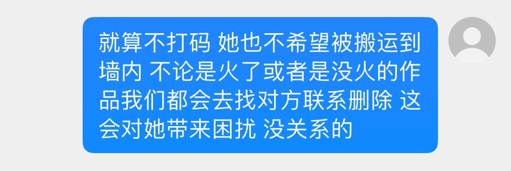

我真的好感激她在。我好想哭。
请大家不要在墙内发我或者找我。因为你们有可能找到的不是我，我也很害怕被找到。我和我朋友因为一些事情离得好远好远。受委屈我总会想如果她在现实就好了。我好想哭。谢谢她愿意借我一些图片什么的，当然有的时候我们是见面一起拍的。也有很多照片是我自己的。

请大家不要在墙内发我或者找我。因为你们有可能找到的不是我，我也很害怕被找到。我和我朋友因为一些事情离得好远好远。受委屈我总会想如果她在现实就好了。我好想哭。谢谢她愿意借我一些图片什么的，当然有的时候我们是见面一起拍的。也有很多照片是我自己的。

我很崩溃。我好想哭。我好想见一个人。我好爱她每次都是她帮我去解决这种事情。我啥时候和她再见面。上学好痛苦。我他妈好想哭啊。
我真的很害怕被扒被骚扰你们知道吗。我真的好崩溃我好想哭。我完全没有办法去想很多事情。为啥我朋友这么好。我很崩溃啊我好没用。
我求求你们不要在墙内找我。 https://t.co/4Jjzlex3aB
我真的很害怕被扒被骚扰你们知道吗。我真的好崩溃我好想哭。我完全没有办法去想很多事情。为啥我朋友这么好。我很崩溃啊我好没用。
我求求你们不要在墙内找我。 https://t.co/4Jjzlex3aB